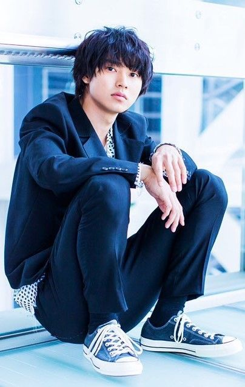

Description Filmography Comment
|  | |
| English Name | Kento Yamazaki |
| Japanese Name | 山﨑賢人 |
| Born | September 7,1994 (age 27) Itabashi,Tokyo,Japan |
| Occupation | Actor,Model |
| Years active | 2010-present |
| Agent | Stardust Promotion |
| Height | 178cm (5ft 10in) |
| Website | Kento Yamazaki |
Kento Yamazaki was born in Tokyo to a middle-class family. He lives with his father, mother and older brother. As an avid fan of soccer, he played the sport from 2nd grade until his 3rd year in middle school. He also had dreams of becoming a soccer player or a coach of the national team. His first modelling offer came during his third year of junior high school when he was scouted by his current agency at Takeshita Dori (Harajuku) whilst on his way home after a soccer match. He worked as a model for the magazine Pichi Lemon from 2009 to 2011,[1][2] before making his debut in acting.[3]
Kento made his acting debut in 2010 when he was cast in the TV series Atami no Sousakan as a mysterious high school student. That was followed by a supporting role in TV series Clone Baby, where he played a hacker. Kento's first movie was Control Tower which was released in April 2011.[4] He sang and played the guitar in the movie, and his acting was well received. The next year, he appeared in The Wings of the Kirin (2012) and as the lead in the horror thriller film Another, working with Control Tower co-star Ai Hashimoto for the second time. He was later cast in the following films: The Chasing World 3[5] and Live action of Love for Beginners. In 2013, he led a film with a LGBT theme, Sato Family Breakfast, which aired on TV (BS Japan). He also participated in the 2nd Taiwan International Queer Film Festival (TIQFF) in 2015. Besides that, he took on a supporting role in the film JINX!!! and the TV series 35-sai no Koukousei. In 2014, he starred in a film based on the highly successful manga of the same name, L DK alongside Ayame Goriki.[6] The film was a breakthrough in his career which garnered him greater public attention. In the same year, he acted in three drama series, including Baseball Brainiacs, where he was cast with actors Sota Fukushi and Yuto Nakajima.[7] He also made his stage debut as main lead Inuzuka Shino in Satomi Hakkenden. In 2015, he was again cast in a film adaptation of a popular manga titled Heroine Shikkaku alongside Mirei Kiritani.[8] He also played the lead role in Orange alongside Tao Tsuchiya.[9] The film was a great success, grossing almost US$28 million and becoming the 9th-highest-grossing Japanese films of 2016.[10][11][12] From those two films, he won the 39th Japan Academy Prize for Newcomers of the Year and was also nominated at 2016 Hochi Film Awards. That same year, he appeared in the television adaptation of the famous manga Death Note as L, and the NHK Asadora Mare, which was led by the aforementioned Tsuchiya Tao. In 2016, Kento was cast in Your Lie in April where he played the role of Kosei Arima, a gifted pianist, alongside Suzu Hirose, who portrayed Kaori Miyazono.[13] For this role, Kento had to learn the piano and practiced for 6 months before the filming started.[14] Thereafter, he was cast in the live action adaptation of Wolf Girl and Black Prince and the TV series A Girl & Three Sweethearts. Kento was also chosen to star in a special short film to celebrate the 10th anniversary of Yasuhisa Hara's historical manga Kingdom[15] as the main character, Shin. He reprised his role in the live action feature film that was released on April 19, 2019.[16] In 2017, he co-starred with Haruna Kawaguchi in One Week Friends.[17] The film received positive ratings from critics, which mostly praised Kento for successfully portraying the cheerful and friendly Yuki Hase. Afterwards, he appeared in a few more live action movies; JoJo's Bizarre Adventure: Diamond Is Unbreakable Chapter I, Psychic Kusuo: The Disastrous Life of Saiki K. and Hyouka: Forbidden Secrets. Towards the end of 2017, he starred in the TV series Rikuoh.[18] In January 2018, Kento played the lead role of a top nightclub host for the NTV winter drama Kiss that Kills, his first lead role in a drama,[19] which also starred Mugi Kadowaki, Mackenyu and Masaki Suda. His film A Forest of Wool and Steel was released too, where he portrayed a piano tuner.[20] For preparation, Kento lived in Hokkaido to learn and practice piano tuning. The Emperor and Empress of Japan attended a special screening of the film and met with the cast.[21][22] In the summer of 2018, Kento was cast in the TV series Good Doctor.[23] Based on the 2013 Korean drama of the same name, it tells the story of a young autistic man who becomes a pediatric surgeon. The drama received a positive response from viewers, and it was the first time he acted as a doctor and took on a more unconventional role. It earned him the Television Drama Academy Award for Best Actor.[24][25][26] In 2020, Kento went on to star in the live action film of Wotakoi: Love is Hard for Otaku. The film was released on February 2020. He played the lead role of Hirotaka Nifuji, an aloof working adult who is a huge fan of video games and the love interest of Narumi Momose, who was played by Mitsuki Takahata. He is currently well-known for his leading role as Ryohei Arisu in Netflix's adaptation of Alice in Borderland. The series is set to run for 2 seasons.
| Year | Title | Role | Network |
|---|---|---|---|
| 2013 | No Dropping Out:Back to School at 35 | Ryo Akutsu | NTV |
| 2015 | Death Note | L | NTV |
| 2020-present | Alice in Borderland | Ryohei Arisu | Netflix |
| Year | Title | Role | Director | Notes |
|---|---|---|---|---|
| 2011 | Another | Kōichi Sakakibara | Takeshi Furusawa | Lead role |
| 2015 | Your Lie in April | Kōsei Arima | Takehiko Shinjo | Lead role |
| 2018 | Kingdom | Xin | Shinsuke Sato | Lead role |